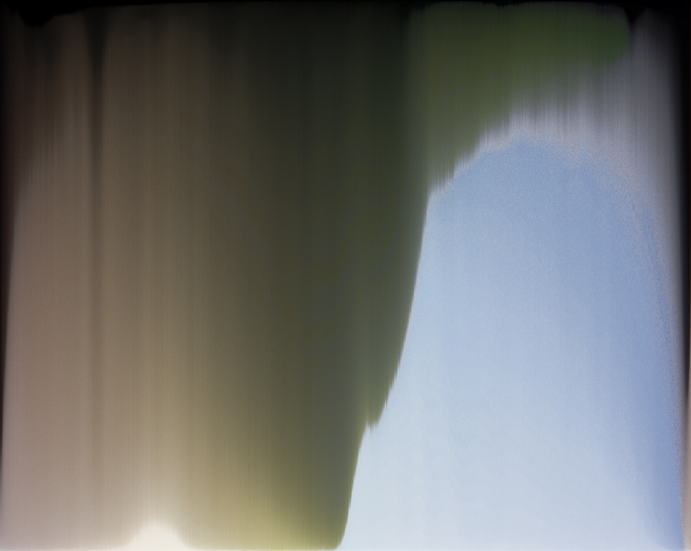

Aperçu des projets


A propos
Quentin Bouvier
29 ans
Programmeur amateur depuis 2004, je me suis inscrit aux formation Developpeur web et mobile de l'IT-Akademy pour transformer cette passion en mon travail. Naturellement curieux et entrepreneur, je suis capable de m'adapter a tout environnement pour en tirer le meilleur, le developper et le porter vers l'avant. Mes capacites d'apprentissage et d'adaptation me permettent d'etre operationnel et de m'integrer rapidement aux equipes.
Compétences
Programmation
- Processing
- VBA Excel
- PHP
- C++
- C
- Bash/sh
Intégration
- HTML5
- CSS
- JS (jQuery)
Environements, logiciels
- Windows
- Mac OS
- Linux
- Visual Studio
- Atom
- Photoshop
- InDesign
parcours
Etudes
-
Ecole des beaux arts de Lyon
2009-2014La creation est au centre du cursus. L'etudiant deploie un travail personnel a travers de nombreux projets visuels. En grande autonomie, l'etudiant est neanmoins encadre dans ses recherches par une equipe composee d'acteurs de l'Art contemporain.
-
Japonais
2007-2009Etudes de langues a la fac de Grenoble III (LEA) puis Lyon III (LLCE). Apprentissage de la langue et de la culture japonaise.
Emplois
-
Manager Secteur Caisses
2015-2017Management d'une equipe composee d'une quinzaine d'hote.sse.s de caisse. Encadrement ponctuel des equipes de mise en rayon. Gestion des plannings, des remplacement et du recrutement.
Mission d'accueil et de SAV.
Utilisation des bases d'articles et maintenance informatique de base sur les caisses.
Gestion de l'affichage commercial en surface de vente.
Centres d'intéret
- Musique
- Guitare
- Informatique/programmation
- Jeux video
- Bande dessinee
- Cinema
- Art contemporain
- Photographie